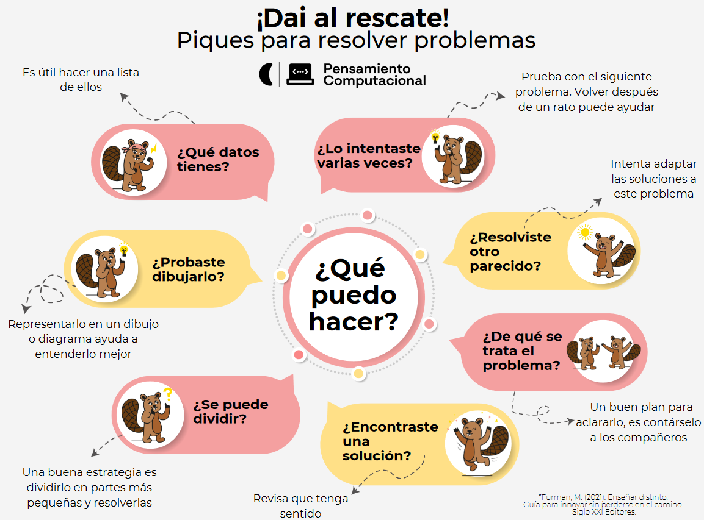

En el inicio de este semestre no hubo mucha cosa, si se trabajo e hicimos actividades que conllevan una reflexión pero yo no estaba interesado en eso, prefería más el contenido del curso ya que venía con la ilusión de meterme más en el mundo de la informática y la computación. En este día iniciamos con preguntas interesantes como “¿Qué es el pensamiento computacional? o ¿Por qué es importante trabajar PC en el aula?”, estas preguntas me dejaron pensando y tienen una importancia gigante dentro de un contexto mundial en el cual la sociedad está dominado por la tecnología, y está aparece cada vez más en las aulas. En sí me hizo darme cuenta de mis fortalezas y debilidades en cierto sentido, también me llenó de curiosidad el concepto, incluso más de lo que ya tenía. Por otro lado, arrancamos a trabajar con técnicas para resolver problemas, a un estilo más secuencial; fue algo interesante porque permite trabajar desde un punto reflexivo y observar más allá de la linealidad. Terminamos con actividades/juegos interactivos en equipos, la idea era aplicar lo visto de técnicas para resolver problemas.

Fecha: 06/08/2024-09/08/2024
Esta clase estuvo bastante entretenida. Nos aproximamos al concepto que mencione anteriormente, al concepto de descomposición, no solo eso sino que realizamos dos grandes bloques, en el primero debíamos imitar una secuencia de pasos de golpes con manos, generando una “melodía” y de cierta forma fue una aproximación práctica de concepto del que hablé anteriormente, ya que el video descomponía esa “melodía” en pasos simples, los cuales una vez aprendidos individualmente solo hacía falta unirlos para completar. En el segundo bloque, debíamos crear por nuestra cuenta un juego en el que se viera reflejada la descomposición del problema principal para lograr su resolución, a su vez creamos entre todos un instrumento de evaluación, el cual vamos a utilizar para evaluar los trabajos de los demás.
En esta instancia me entretuve principalmente porque me mostraron puntos de vista de la descomposición que nunca antes había visto, aprendí diferentes enfoques y me hizo darme cuenta todavía más de lo mucho que me faltaba en el análisis críticos y de problemas.
En la siguiente clase hicimos la presentación de los trabajos de descomposición y a su vez los evaluamos en dúos, se hizo así con la idea de tener más de un criterio al momento de evaluar. Me gustó esta modalidad porque te obliga a discutir/debatir con alguien acerca de la calificación de un trabajo, es una forma de compartir con los demás bastante eficiente aunque más costosa al momento de calificar, también por los puntos a tener en cuenta al momento de hacerlo.
Fecha: 13/08/2024-16/08/2024-20/08/2024
Este periodo de clases fue más o menos por el mismo camino siempre. Principalmente se centraron en la presentación y coevaluación de las propuestas de trabajo que implicarán descomposición, hubo muchos y muy variados trabajos. La idea era que los demás compañeros lograran resolver dichos desafíos pero al final se les presentaba la resolución del mismo con el fin de mostrar el progreso y nivel de desafío al que se enfrentaban.
Bueno, llegamos a una clase bastante interesante porque nos desviamos bastante de la linealidad a la que nos enfrentamos, esto paso ya que a la profe se le ocurrió introducir el concepto de bitácora. De esta forma nos saco a todos de los que estamos acostumbrados normalmente, si es verdad que el año pasado habíamos tenido un profesor que aplicó el mismo método pero considero que este año es muchísimo mejor; la idea es mantener un registro semanal o clase a clase del trabajo en el aula, las reflexiones personales respecto al curso, también nuestras fortalezas y debilidades.
A su vez se introdujeron dos conceptos muy importantes para el curso y la finalidad del mismo, estos son secuencia y algoritmo. Anteriormente mencioné que me había adelantado al curso investigando por mi lado, bueno llegamos a dicho caso; entraron dos factores importantes para ello, el primero es que me di cuenta de que no estaba rindiendo lo que podría rendir, dejando un poco de lado las clases y los trabajos, y en segundo lugar me emocione mucho cuando me enteré que serían esos conceptos los que trabajamos próximamente; me puse manos a la obra y en cuestión de una noche copie y estudie los dos conceptos, a priori pueden parecer bastante sencillos pero en realidad tienen diferencias bastantes sutiles entre uno y otro, esto se debe a que secuencia está incluido en el concepto de algoritmo pero no necesariamente tienen que ser recíprocos o que siempre se cumplan.
Aprendizajes:
Creación de una propuesta de trabajo.
Aproximación a una evaluación.
Aproximación a un concepto formal de descomposición.
Fallas-Cosas a mejorar:
Propuesta de trabajo.
Evaluación.
Descomposición de ideas.
Expandir la mente a otro tipo de visiones, referido a desafíos diarios.
Fecha: 23/08/2024-27/08/2024-30/08/2024
Bueno, llegamos a una clase bastante interesante porque nos desviamos bastante de la linealidad a la que nos enfrentamos, esto paso ya que a la profe se le ocurrió introducir el concepto de bitácora. De esta forma nos saco a todos de los que estamos acostumbrados normalmente, si es verdad que el año pasado habíamos tenido un profesor que aplicó el mismo método pero considero que este año es muchísimo mejor; la idea es mantener un registro semanal o clase a clase del trabajo en el aula, las reflexiones personales respecto al curso, también nuestras fortalezas y debilidades.
A su vez se introdujeron dos conceptos muy importantes para el curso y la finalidad del mismo, estos son secuencia y algoritmo. Anteriormente mencioné que me había adelantado al curso investigando por mi lado, bueno llegamos a dicho caso; entraron dos factores importantes para ello, el primero es que me di cuenta de que no estaba rindiendo lo que podría rendir, dejando un poco de lado las clases y los trabajos, y en segundo lugar me emocione mucho cuando me enteré que serían esos conceptos los que trabajamos próximamente; me puse manos a la obra y en cuestión de una noche copie y estudie los dos conceptos, a priori pueden parecer bastante sencillos pero en realidad tienen diferencias bastantes sutiles entre uno y otro, esto se debe a que secuencia está incluido en el concepto de algoritmo pero no necesariamente tienen que ser recíprocos o que siempre se cumplan.
En estas fechas no pasó mucha cosa interesante la verdad, de hecho no tengo mucho material como tal para hablar al respecto, en sí no pude asistir a la clase del 9 de septiembre y las demás clases o no se dictaron por diferentes razones o seguimos compartiendo las propuestas sobre algoritmos o coevaluación entre nosotros, aunque hay que destacar que yo no hice ese trabajo, no porque no quisiera sino que no me llamaba la atención y estaba desanimado aparte, por lo que no sentí un impulso que me hiciera armar el algoritmo y trabajar con ello, aunque no fue la gran cosa, la actividad se basaba en buscar figuras hechas con papel(origami) y armar un video o audio explicando paso a paso de como crear dicha figura, los demás debíamos seguir estos paso a paso y llegar a la figura, si es que estaba correctamente descrito el algoritmo.
Fecha: Sin fecha
En este último tramo del curso han pasado muchas cosas. Esta muy probablemente sea la última bítacora el año y tango que decir wow; hay muchas cosas que no me esperaba. Hubo muchos detalles que realmente convirtieron este tramo el año en una serie por así decirlo.
Por mi lado puedo decir que este curso estuvo muy muy bueno; a diferencia del semestre pasado, para mi fue mucho mejor este semestre aunque allá sido más teórico que práctico, lo que remarca una diferencia fundamental a lo que fue el curso de Tecnologías Multimediales. Creo qué una parte de lo divertido de Pensamiento Computacional fue ese cambio de lo teórico a lo práctico pero eso ya es algo de gusto personal. Aprendí bastante acerca e temas que siempre me interesaron principalmente por la cercanía a los conceptos trabajados y sus aplicaciones la tecnología dentro de la programación, por ejemplo.
Haber profundizado en conceptos como lo son secuencia, algoritmo, patrones, abstracción, etc. Es algo fundamental en el pensamiento lógico y racional que muchas veces se deja de lado y como futuro docente creo fuertemente en que la lógica juega un papel imporntante en nuestro día a día.